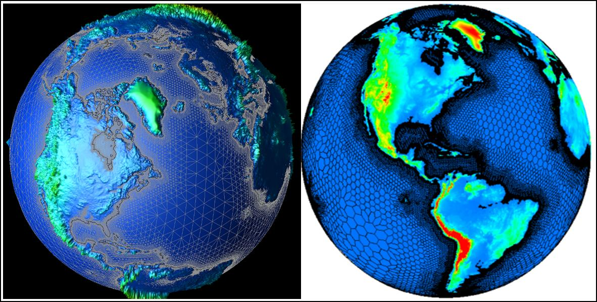
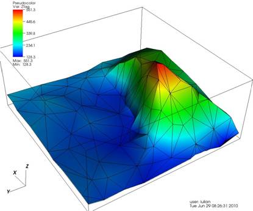
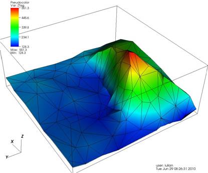
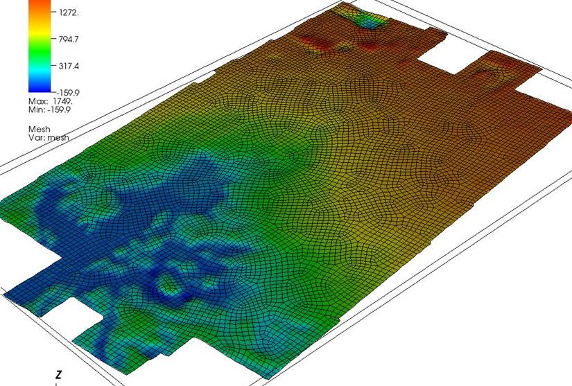

Climate
DOE and other programs fund extensive climate modeling and simulation efforts. Global climate change is one of the most significant problems of our time, and could affect the lives of every human on the planet. ITAPS plays a role in several climate modeling efforts.Smooth Grid Refocusing and Adaptive Mesh Refinement
Comprehensive Design and Development of the Community Climate System Model for Tera-scale Computers
ITAPS Personnel: Ahmed Khamayseh (ORNL), Valmor de Almeida (ORNL)
Climate Personnel: John Drake (ORNL)
Project Status: Active
The accuracy and convergence of computational solutions using mesh-based numerical methods are strongly dependent on the quality of the mesh being used. Our efforts at ORNL include the development of several algebraic and PDE-based elliptic methods for optimizing meshes that are comprised of elements of arbitrary hybrid polygonal and polyhedral type. These methods provide the ability to generate and focus mesh resolution over areas of particular interest yet strive to equidistribute the node densities of the mesh while improving the aspect ratios and quality of mesh cells. The numerical methods that solve the partial differential equations perform node redistribution on the mesh to maximize the equidistribution of a weighted function of geometric and solution parameters.
In collaboration the SciDAC-funded ``A Scalable and Extensible Earth System Model for Climate Change Science'' project, the ITAPS team at ORNL has developed a fully coupled mesh generation, mesh adaptation, and data transfer capability geared toward generating high-quality meshes for climate modeling. In particular, we are investigating a solution-adaptive method for the shallow atmosphere model using a local least-squares approximation with spherical harmonics basis functions. The key enabling components include a hybrid mesh generator coupled with r-h-p-adaptivity. We employ conformal mapping to derive an elliptic PDE-model for the optimization and $r$-adaptation of hybrid meshes. In addition, an algebraic method is used for a combined h-p-adaptive method wherein the maximum degree of the spherical harmonics basis is variable (polynomial degree p-adaptivity) for any basis set, and the number of collocation mesh points spanned by the corresponding basis set is also variable (mesh spacing h-adaptivity). This approach is particularly attractive when used in conjunction with a Cartesian representation of the time-dependnent solution of the shallow atmosphere model for the velocity and atmosphere height fields, and semi-Lagrangian transport algorithms.We have implemented a locally adaptive least-squares method with spherical harmonic basis functions for representing functions on the sphere. The approximation uses clusters of spatial mesh points on the sphere with variable sizes wherein a basis set is defined. Given test function values on the points, we use the least-squares method to find a linear combination of the trial basis set to approximate the data. By dynamically refining and/or coarsening points from the cluster sets, and increasing or decreasing the dimension of the basis set, we can obtain a smooth approximation of rough data. The adaptive mesh point insertion and removal is accomplished by defining an underlying unstructured triangular mesh connecting all points on the surface. Since the approximation is smooth, it provides approximations for field differentiation by simple differentiation of the basis set. We are currently employing this approach in conjunction with a Cartesian representation of the velocity field to obtain surface gradient approximations that are not adversely affected by the pole problem existing in spherical coordinates.
We have tested this concept successfully on a realistic orography field and on various initial boundary conditions, see the figure below. Orography plays an important role in determining the strength and location of atmospheric jet streams and its impact is most pronounced in regional climate studies. Orography is also crucial for predicting many key climatic dynamics, such as rainfall, snowfall, and cloud cover. The use of h-p-adaptivity has proven to produce more accurate simulations at a less cost (much smaller meshes) than striving for the same results at the level of uniform meshes.

Figure: The final hybrid adapted meshes are much coarser at sea level (50-km)
and finer at the high altitude regions (1-km) with only a fraction
of the original field data size allowing the orogrhapy field
to be globally preserved to very small accuracy.
Ice Sheet Modeling
Funded by DOE's Office of Advanced Scientific Computing Research
(ASCR) program.
ITAPS Personnel: Tim Tautges (ANL)
Project Status: Active
The behavior of land-based ice sheets was identified in the IPCC AR4
report as contributing significant uncertainty to future global sea
level rise. DOE ASCR funded several projects to develop advanced
modeling for the dynamics of ice sheets. The dynamics of ice
sheets is a complex process, influenced not only by land, ocean, and
atmosphere temperatures, but also by the shape and topography of the
land and of the floating ice shelf itself. The need for very long
time integrations places additional stress on the solution methods used
for ice sheet problems.
Geometry is an important part of modeling ice sheets. The land
bed under an ice sheet, the ice sheet top surface, and the contact line
where ice, land, and ocean meet, all need to be represented
accurately. To capture slip behavior under the ice sheet, a
smooth tangent field is needed as well. Bed elevations are
derived primarily from radar or other remote sensing data, which is
given as a point field with elevations and thicknesses. The MOAB
library is used to represent the point-based surfaces, with a smooth
facet-based tangent field computing on the surface. An iGeom
interface is provided to evaluate this surface, both for mesh
generation and for evaluation of boundary conditions. Mesh
generation is performed using the MeshKit open source meshing library.
Figure: Mesh-based representation
of ice sheet bed. 20k triangle mesh (decimated from original 5
million triangle mesh CRESIS model) (left); closeup showing
topographical feature (right).
 

Figure: All-quadrilateral mesh for
ice sheet at 1 km resolution, generated by MeshKit using smooth surface
evaluator in MOAB.

References
Tautges, T. J., "Mesh-Based Tools for Land Ice
Simulations", 15th Annual CESM Workshop, Breckenridge, CO, June 30,
2010.